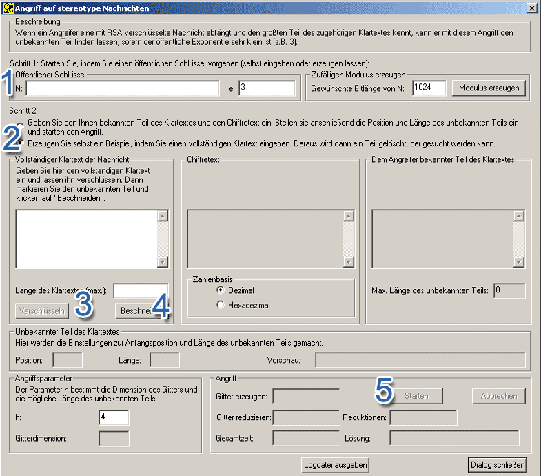

.Sie erreichen diesen Dialog über den Menüeintrag Einzelverfahren \ RSA-Kryptosystem \ Gitterbasierte Angriffe auf RSA \ Angriff auf stereotype Nachrichten.
Die Maske zum Angriff auf stereotype Nachrichten
bietet zwei verschiedene Ansätze:
1. Beispieldaten erzeugen lassen, dann Angriff durchführen
Man erzeugt in der Maske selbst ein Beispiel und führt anschließend
den Angriff darauf durch. Dieser Modus gibt unerfahreneren Benutzern die Möglichkeit,
die Grenzen des Verfahrens zu erkunden.
2. Alle Informationen selbst eingeben, dann Angriff durchführen
Man gibt den öffentlichen Schlüssel, den bekannten Teil der
Nachricht und den Chiffretext selbst ein, um einen Angriff durchzuführen.
Zusätzlich müssen noch Angaben zur Länge und Position des unbekannten
Teils der Nachricht gemacht werden. Dieser Modus ist nur für erfahrene
Benutzer zu empfehlen.

Hier wird zunächst der zweite Modus beschrieben, um einen schnellen Einstieg zu erlauben. Unter "Vollständig eigenen Angriff durchführen" wird der erste Modus näher erläutert.
Hier wird ebenfalls zunächst der öffentliche Schlüssel benötigt. Anschließend müssen der bekannte Teil des Klartextes und der Chiffretext eingegeben werden. Darüber hinaus muss die Position und die Länge des unbekannten Teils der Nachricht eingestellt werden. Dies kann entweder durch direkte Eingabe in die entsprechenden Felder oder durch Verwendung der Drehfelder geschehen. Wurde bereits der bekannte Teil des Klartextes eingegeben, können im "Vorschau"-Feld die Änderungen direkt nachvollzogen werden.
In der Gruppierung Angriffsparameter kann der Parameter h dieses Angriffes verändert werden (h>1). Ein größeres h erlaubt zwar einen größeren unbekannten Teil, wirkt sich jedoch ungünstig auf die Gitterdimension und damit die Laufzeit aus.
N:
81310067042521973654412416255383522902083490331150101578762604997556337351877500251868504140980638835702886192443448896428977810893957566807779481557371020210138654283590601149334614497294215115728214075082663632500764651168005473090221075184203807588533522903997544767899971452793878122769013464319929212827
e:
3
Chiffretext (dezimal):
6876244464448251820979970022698884385836638083088083419902980411203512466120416238865613640690374802876646562813408073087772632930261205441418948916744828883561053460736104035313942934234432107110875242023732132161152311950942935350416008458837058423162900984604703060723925905499919978226774400829173376590
Bekannter Teil des Klartextes
(ohne Anführungszeichen):
"Hallo Bob!
Dein heutiges Passwort lautet:
MfG, der Chef"
Anfangsposition des unbekannten
Teils:
44
Länge des unbekannten Teils:
10